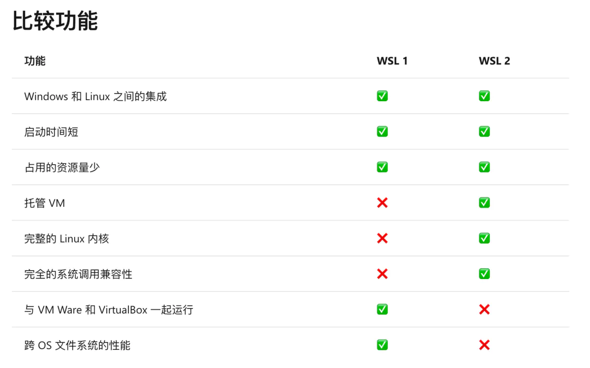

WSL2数据迁移¶
WSL ( Windows Subsystem Linux ) Windows Linux 子系统是 Win10 新增的一个功能，使用 WSL 可以直接在 Windows 上面使用和运行 Linux 程序和命令。而 WSL2 是 WSL 的一个新的版本，自 Windows10 2004 版本发布之后，WSL2 可以直接在 Windows10 中直接使用，相比于 WSL，WSL2 使用了 HyperV 技术，解决了 WSL 不能使用 docker 的问题，性能也得到了进一步的提升，WSL2 也可以说是使用真正的、更加完整的 Linux 内核。

回到正题，开启和安装 WSL2 默认是安装在 C 盘中，随着软件的安装和实际项目的开发，很快就能使 C 盘存储空间告急，所以一个解决办法就是将 WSL2 数据进行迁移，将 WSL2 安装在 C 盘之外的大容量存储位置。当然 C 盘足够大的话，可以直接忽略数据迁移工作。
软链接的方式¶
通过软链接的方式修改 VHDX 文件的存放磁盘，达到缓解 C 盘存储压力的问题。
实现方式：
$newLocation = "E:\WSL\Ubuntu-WSL2\"
cd ~\AppData\Local\Packages\CanonicalGroupLimited.Ubuntu20.04onWindows_79rhkp1fndgsc\LocalState
wsl --shutdown
Optimize-VHD .\ext4.vhdx -Mode Full
mkdir $newLocation -Force
mv ext4.vhdx $newLocation
cd ..
rm LocalState
New-Item -ItemType SymbolicLink -Path "LocalState" -Target $newLocation
文件导出方式¶
首先先关闭 WSL
wsl --shutdown
查看系统信息：
wsl -l -v
导出系统文件：
wsl --export <DistroName> <PathToTarArchive>
删除系统：
wsl --unregister <DistroName>
从指定位置导入新的系统：
wsl --import <DistronName> <PathToTarArchive>
设置默认用户：
ubuntu2004.exe config --default-user xxx